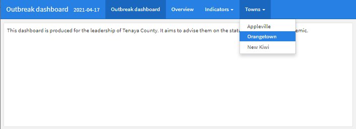

42 Dashboards với R Markdown

Chương này sẽ trình bày cách sử dụng cơ bản của package flexdashboard. Package này cho phép bạn dễ dàng định dạng đầu ra R Markdown dưới dạng dashboard với các ô điều khiển và trang. Nội dung dashboard có thể là văn bản, số liệu/bảng tĩnh hoặc đồ họa tương tác.
Ưu điểm của flexdashboard:
- Yêu cầu việc viết code R không chuẩn hóa là ít nhất - với rất ít thực hành, bạn có thể nhanh chóng tạo một dashboard
- Dashboard thường có thể được gửi qua email cho đồng nghiệp dưới dạng tệp HTML độc lập - không cần máy chủ
- Bạn có thể kết hợp flexdashboard với shiny, ggplotly và “html widgets” khác để thêm tính tương tác
Nhược điểm của flexdashboard:
- Ít tùy chỉnh hơn so với việc chỉ sử dụng shiny để tạo dashboard
Bạn có thể tìm thấy các hướng dẫn toàn diện về cách sử dụng flexdashboard được mô tả ở chương này trong phần Tài nguyên. Dưới đây, chúng tôi mô tả các tính năng cốt lõi và đưa ra ví dụ về việc xây dựng dashboard để khám phá một đợt bùng dịch, sử dụng dữ liệu linelist.
42.1 Chuẩn bị
Gọi các packages
Trong sổ tay này, chúng tôi nhấn mạnh đến hàm p_load() từ package pacman, cài đặt package nếu cần và gọi nó để sử dụng. Bạn cũng có thể gọi các package đã cài đặt với hàm library() từ base R. Xem chương R cơ bản để biết thêm thông tin về các R packages.
Nhập dữ liệu
Chúng ta nhập bộ dữ liệu về các trường hợp từ một vụ dịch Ebola mô phỏng. Nếu bạn muốn theo dõi, hãy nhấp để tải xuống linelist “sạch” (dưới dạng tệp .rds). Nhập dữ liệu bằng hàm import() từ package rio (nó xử lý nhiều loại tệp như .xlsx, .csv, .rds - xem chương Nhập xuất dữ liệu để biết chi tiết).
50 hàng đầu tiên của linelist được hiển thị bên dưới.
42.2 Tạo R Markdown mới
Sau khi bạn đã cài đặt package, hãy tạo một tệp R Markdown mới bằng cách nhấp qua File > New file > R Markdown.

Trong cửa sổ mở ra, chọn “From Template” và chọn mẫu “Flex Dashboard”. Sau đó, bạn sẽ được nhắc đặt tên cho tài liệu. Trong ví dụ của chương này, chúng tôi sẽ đặt tên R Markdown của chúng tôi là “outbreak_dashboard.Rmd”.

42.3 Script
Script là một script R Markdown và do đó có các thành phần và tổ chức tương tự như được mô tả trong chương Báo cáo với R Markdown. Chúng ta sẽ xem lại một cách ngắn gọn định dạng này và nêu rõ sự khác biệt so với các định dạng đầu ra R Markdown khác.
YAML
Ở đầu script là tiêu đề “YAML”. Mục này phải bắt đầu bằng ba dấu gạch ngang --- và phải kết thúc bằng ba dấu gạch ngang ---. Tham số YAML có trong cặp key:value. Thụt lề và đặt dấu hai chấm trong YAML là việc quan trọng - các cặp key:value được phân tách bằng dấu hai chấm (không phải dấu bằng!).
YAML phải bắt đầu bằng metadata cho tài liệu. Thứ tự của các tham số YAML chính này (không thụt lề) không quan trọng. Ví dụ:
Bạn có thể sử dụng code R trong các giá trị YAML bằng cách đặt nó giống như code nội dòng (bắt dầu bằng r trong dấu nháy đơn ngược) nhưng cũng trong dấu ngoặc kép (xem phần Ngày ở trên).
Tham số YAML bắt buộc là output:, chỉ định loại tệp sẽ được tạo (ví dụ: html_document, pdf_document, word_document hoặcpowerpoint_presentation). Đối với flexdashboard giá trị tham số này hơi khó hiểu - nó phải được đặt là output:flexdashboard::flex_dashboard. Lưu ý dấu hai chấm đơn, dấu hai chấm đôi và dấu gạch dưới. Tham số đầu ra YAML này thường được theo sau bởi một dấu hai chấm nữa và các tham số phụ được thụt lề (xem các tham số orientation: và vertical_layout: bên dưới).
title: "My dashboard"
author: "Me"
date: "`r Sys.Date()`"
output:
flexdashboard::flex_dashboard:
orientation: rows
vertical_layout: scrollNhư hình trên, thụt lề (2 dấu cách) được sử dụng cho các tham số phụ. Trong trường hợp này, đừng quên đặt thêm một dấu hai chấm sau dấu chính, như key:value:.
Nếu thích hợp, các giá trị logic phải được đưa ra trong YAML ở dạng chữ thường (true, false, null). Nếu dấu hai chấm là một phần giá trị của bạn (ví dụ: trong tiêu đề), hãy đặt giá trị trong dấu ngoặc kép. Xem các ví dụ trong các phần bên dưới.
Đoạn Code
Một script R Markdown có thể chứa nhiều “đoạn” code - đây là những vùng của script mà bạn có thể viết code R nhiều dòng và chúng hoạt động giống như các scripts R nhỏ.
Các đoạn code được tạo bằng ba dấu nháy đơn ngược và dấu ngoặc nhọn với chữ “r” viết thường bên trong. Đoạn code được đóng bằng ba dấu nháy đơn ngược. Bạn có thể tạo một đoạn code mới bằng cách tự gõ nó ra, bằng cách sử dụng phím tắt “Ctrl + Alt + i” (hoặc Cmd + Shift + r trong Mac) hoặc bằng cách nhấp vào biểu tượng ‘insert a new code chunk’ màu xanh lục ở đầu trình chỉnh sửa script của bạn. Nhiều ví dụ được đưa ra dưới đây.
Văn bản tường thuật
Bên ngoài “đoạn” code R, bạn có thể viết văn bản tường thuật. Như được mô tả trong chương Báo cáo với R Markdown, bạn có thể in nghiêng văn bản bằng cách bao quanh nó bằng một dấu hoa thị (*) hoặc in đậm bằng cách bao quanh nó bằng hai dấu hoa thị (**). Nhớ lại rằng dấu đầu dòng và lược đồ đánh số nhạy cảm với dòng mới, thụt đầu dòng và kết thúc một dòng có hai dấu cách.
Bạn cũng có thể chèn code R nội dòng vào văn bản như được mô tả trong chương Báo cáo với R Markdown, bằng cách bao quanh code bằng dấu nháy đơn ngược và bắt đầu lệnh bằng “r”: ` 1+1` (xem ví dụ với ngày ở trên).
Đầu mục
Các cấp đầu mục khác nhau được thiết lập với số lượng ký hiệu thăng khác nhau, như được mô tả trong chương Báo cáo với R Markdown.
Trong flexdashboard, đầu mục chính (#) tạo một “trang” của dashboard. Đầu mục cấp hai (##) tạo một cột hoặc một hàng tùy thuộc vào thông số orientation: của bạn (xem chi tiết bên dưới). Đầu mục cấp ba (###) tạo bảng điều khiển cho các đồ thị, biểu đồ, bảng, văn bản, v.v.
42.4 Thuộc tính mục
Như trong R markdown bình thường, bạn có thể chỉ định các thuộc tính để áp dụng cho các phần của dashboard của mình bằng cách bao gồm các tùy chọn key=value sau một đầu mục, trong dấu ngoặc nhọn { }. Ví dụ: trong một báo cáo HTML R Markdown điển hình, bạn có thể sắp xếp các tiêu đề phụ thành các tab với ## Đầu mục của tôi {.tabset}.
Lưu ý rằng các thuộc tính này được viết sau một đầu mục trong một phần văn bản của script. Các tùy chọn này khác với các tùy chọn knitr được chèn bên trong ở đầu các đoạn code R, chẳng hạn như out.height =.
Các thuộc tính mục dành riêng cho flexdashboard bao gồm:
{data-orientation=}Đặt thànhrows(hàng) hoặccolumns(cột). Nếu dashboard của bạn có nhiều trang, hãy thêm thuộc tính này vào mỗi trang để biểu thị hướng (được giải thích thêm trong layout section).
{data-width=}và{data-height=}đặt kích thước tương đối của biểu đồ, cột, hàng được bố trí theo cùng một chiều (ngang hoặc dọc). Kích thước tuyệt đối được điều chỉnh để lấp đầy không gian tốt nhất trên bất kỳ thiết bị hiển thị nào nhờ công cụ flexbox.- Độ cao của biểu đồ cũng phụ thuộc vào việc bạn đặt tham số YAML
vertical_layout: fillhayvertical_layout: scroll. Nếu được đặt thành cuộn, độ cao biểu đồ sẽ phản ánh tùy chọnfig.height =truyền thống trong đoạn code R.
- Xem tài liệu về kích thước đầy đủ tại flexdashboard website
- Độ cao của biểu đồ cũng phụ thuộc vào việc bạn đặt tham số YAML
{.hidden}Sử dụng tùy chọn này để loại trừ một trang cụ thể khỏi thanh điều hướng{data-navbar =}Sử dụng điều này trong đầu mục cấp trang để lồng nó vào menu thả xuống của thanh điều hướng. Cung cấp tên (trong dấu ngoặc kép) của menu thả xuống. Xem ví dụ bên dưới.
42.5 Bố cục
Điều chỉnh bố cục dashboard của bạn theo những cách sau:
- Thêm trang, cột/hàng và biểu đồ với đầu mục R Markdown (ví dụ: #, ## hoặc ###)
- Điều chỉnh tham số YAML
orientation:thànhrowshoặccolumns - Chỉ định xem bố cục lấp đầy trình duyệt hay cho phép cuộn
- Thêm các tab vào một đầu mục phần cụ thể
Trang
Các đầu mục cấp đầu tiên (#) trong R Markdown sẽ đại diện cho “các trang” của dashboard. Theo mặc định, các trang sẽ xuất hiện trong thanh điều hướng dọc theo đầu dashboard.


Bạn có thể nhóm các trang thành một “menu” trong thanh điều hướng trên cùng bằng cách thêm thuộc tính {data-navmenu=} vào đầu mục trang. Hãy cẩn thận - không bao gồm dấu cách xung quanh dấu bằng nếu không nó sẽ không hoạt động!

Đây là những gì script tạo ra:

Bạn cũng có thể chuyển đổi một trang hoặc một cột thành “thanh bên” ở phía bên trái của dashboard bằng cách thêm thuộc tính {.sidebar}. Nó có thể giữ văn bản (có thể xem từ bất kỳ trang nào) hoặc nếu bạn đã tích hợp tính năng tương tác shiny, nó có thể hữu ích để giữ các điều khiển nhập của người dùng như thanh trượt hoặc menu thả xuống.

Đây là những gì script tạo ra:

Hướng
Đặt thông số orientation: yaml để cho biết cách hiểu các đầu mục cấp hai R Markdown (##) của bạn - dưới dạng orientation: columns hoặc orientation: rows.
Đầu mục cấp hai (##) sẽ được hiểu là các cột hoặc hàng mới dựa trên cài đặt orientation này.
Nếu bạn đặt orientation: columns, đầu mục cấp hai sẽ tạo cột mới trong dashboard. Dashboard bên dưới có một trang, chứa hai cột, với tổng số ba bảng. Bạn có thể điều chỉnh độ rộng tương đối của các cột với {data-width=} như hình dưới đây.

Đây là những gì script tạo ra:

Nếu bạn đặt orientation: rows, đầu mục cấp hai sẽ tạo hàng mới thay vì cột. Dưới đây là script tương tự như trên, nhưng orientation: rows để các đầu mục cấp hai tạo ra hàng thay vì cột. Bạn có thể điều chỉnh chiều cao tương đối của các hàng với {data-height=} như hình dưới đây.

Đây là những gì script tạo ra:

Nếu dashboard của bạn có nhiều trang, bạn có thể chỉ định hướng cho từng trang cụ thể bằng cách thêm thuộc tính {data-orientation=} vào tiêu đề của mỗi trang (chỉ định rows hoặc columns mà không có dấu ngoặc kép).
Tabs
Bạn có thể chia nội dung thành các tab bằng thuộc tính {.tabset}, như trong các đầu ra HTML R Markdown khác.
Chỉ cần thêm thuộc tính này sau đầu mục mong muốn. Các đầu mục con dưới đầu mục đó sẽ được hiển thị dưới dạng tab. Ví dụ: trong script ví dụ bên dưới, cột 2 bên phải (##) được sửa đổi để đường cong dịch bệnh và ngăn bảng (###) được hiển thị trong các tab.
Bạn có thể làm tương tự với các hàng nếu hướng của bạn là các hàng.

Đây là những gì script tạo ra:

42.6 Thêm nội dung
Hãy bắt đầu xây dựng một dashboard. Dashboard đơn giản của chúng tôi sẽ có 1 trang, 2 cột và 4 ô điều khiển. Chúng tôi sẽ xây dựng từng ô điều khiển một để minh họa.
Bạn có thể dễ dàng bao gồm các đầu ra R tiêu chuẩn như văn bản, ggplots và bảng (xem chương Trình bày bảng). Đơn giản chỉ cần code chúng trong một đoạn code R như bạn làm đối với bất kỳ script R Markdown nào khác.
Lưu ý: bạn có thể tải xuống script Rmd hoàn chỉnh và đầu ra dashboard HTML - xem chương Tải sách và dữ liệu.
Chữ
Bạn có thể nhập văn bản Markdown và bao gồm code nội dòng như đối với bất kỳ đầu ra R Markdown nào khác. Xem chương Báo cáo với R Markdown để biết chi tiết.
Trong dashboard này, chúng tôi bao gồm một ô điều khiển văn bản tóm tắt bao gồm văn bản động cho thấy ngày nhập viện mới nhất và số trường hợp được báo cáo trong các ổ dịch.
Bảng
Bạn có thể bao gồm các đoạn code R in kết quả đầu ra chẳng hạn như bảng. Nhưng kết quả đầu ra sẽ trông đẹp nhất và đáp ứng với kích thước cửa sổ nếu bạn sử dụng hàm kable() từ knitr để hiển thị các bảng của mình. Các hàm flextable có thể tạo ra các bảng được rút ngắn/cắt bỏ.
Ví dụ: bên dưới chúng tôi cung cấp linelist() thông qua lệnh count() để tạo ra một bảng tóm tắt các trường hợp theo bệnh viện. Cuối cùng, bảng này được chuyển đến knitr::kable() và kết quả có một thanh cuộn ở bên phải. Bạn có thể đọc thêm về cách tùy chỉnh bảng của mình với kable() và kableExtra tại đây.

Đây là những gì script tạo ra:

Nếu bạn muốn hiển thị một bảng động cho phép người dùng lọc, sắp xếp và/hoặc nhấp qua “các trang” của dataframe, hãy sử dụng package DT và đó là hàm datatable(), như trong code bên dưới.
Trong code ví dụ dưới đây, dataframe linelist được in. Bạn có thể đặt rownames = FALSE để tiết kiệm không gian theo chiều ngang và filter = "top" để có bộ lọc ở đầu mỗi cột. Danh sách các thông số kỹ thuật khác có thể được cung cấp cho options =. Dưới đây, chúng tôi đặt pageLength = để 5 hàng xuất hiện và scrollX = để người dùng có thể sử dụng thanh cuộn ở dưới cùng để cuộn theo chiều ngang. Đối số class = 'white-space: nowrap' đảm bảo rằng mỗi hàng chỉ là một dòng (không phải nhiều dòng). Bạn có thể đọc về các đối số và giá trị có thể có khác tại đây hoặc bằng cách nhập ?datatable
Đồ thị
Bạn có thể in các đồ thị vào cửa sổ dashboard như bạn làm trong script R. Trong ví dụ của chúng tôi, chúng tôi sử dụng package incidence2 để tạo một “epicurve” theo nhóm tuổi bằng hai lệnh đơn giản (xem trang Đường cong dịch bệnh). Tuy nhiên, bạn có thể sử dụng ggplot() và in một đồ thị theo cách tương tự.

Đây là những gì script tạo ra:

Đồ thị tương tác
Bạn cũng có thể chuyển một ggplot tiêu chuẩn hoặc đối tượng đồ thị khác vào ggplotly() từ package plotly (xem chương Đồ thị tương tác). Điều này sẽ làm cho đồ thị của bạn có tính tương tác, cho phép người đọc “phóng to” và hiển thị khi di chuột qua giá trị của mọi điểm dữ liệu (trong trường hợp này là số trường hợp mỗi tuần và nhóm tuổi trong đường cong).
age_outbreak <- incidence(linelist, date_onset, "week", groups = age_cat)
plot(age_outbreak, fill = age_cat, col_pal = muted, title = "") %>%
plotly::ggplotly()Đây là những gì hiển thị trong dashboard (gif). Chức năng tương tác này sẽ vẫn hoạt động ngay cả khi bạn gửi email dashboard dưới dạng tệp tĩnh (không trực tuyến trên máy chủ).

Tiện ích HTML
Tiện ích HTML cho R là một loại package R đặc biệt giúp tăng tính tương tác bằng cách sử dụng các thư viện JavaScript. Bạn có thể nhúng chúng vào đầu ra R Markdown (chẳng hạn như flexdashboard) và trong dashboard Shiny.
Một số ví dụ phổ biến về các tiện ích này bao gồm:
- Plotly (được sử dụng trong chương sổ tay này và trong chương Đồ thị tương tác)
- visNetwork (được sử dụng trong chương Chuỗi lây nhiễm của sổ tay này)
- Leaflet (được sử dụng trong chương GIS cơ bản của sổ tay này)
- dygraph (hữu ích để hiển thị dữ liệu chuỗi thời gian một cách tương tác)
- DT (
datatable()) (được sử dụng để hiển thị các bảng động với bộ lọc, sắp xếp, v.v.)
Dưới đây, chúng tôi biểu diễn thêm một chuỗi lây nhiễm dịch sử dụng visNetwork vào dashboard. Script chỉ hiển thị code mới được thêm vào phần “Cột 2” của script R Markdown. Bạn có thể tìm thấy code trong chương Chuỗi lây nhiễm của sổ tay này.

Đây là những gì script tạo ra:

42.7 Tổ chức Code
Bạn có thể chọn có tất cả code trong script R Markdown flexdashboard. Ngoài ra, để có một script dashboard rõ ràng và ngắn gọn hơn, bạn có thể chọn gọi code/biểu đồ được lưu trữ hoặc tạo trong các scripts R bên ngoài. Điều này được mô tả chi tiết hơn trong chương Báo cáo với R Markdown.
42.8 Shiny
Việc tích hợp package R shiny có thể giúp dashboards của bạn phản ứng mạnh hơn với thông tin nhập của người dùng. Ví dụ: bạn có thể yêu cầu người dùng chọn một khu vực pháp lý hoặc một phạm vi ngày và để các bảng phản ứng với lựa chọn của họ (ví dụ: lọc dữ liệu được hiển thị). Để nhúng phản ứng shiny vào flexdashboard, bạn chỉ cần thực hiện một số thay đổi đối với R Markdown script flexdashboard của mình.
Bạn có thể sử dụng shiny để tạo ứng dụng/dashboards mà không cần đến flexdashboard (bảng điều khiển linh hoạt). Chương Dashboards với Shiny trong sổ tay cung cấp thông tin tổng quan về cách tiếp cận này, bao gồm phần bổ sung về cú pháp shiny, cấu trúc tệp ứng dụng và các tùy chọn chia sẻ/xuất bản (bao gồm cả tùy chọn máy chủ miễn phí). Cú pháp và các mẹo chung này cũng chuyển sang ngữ cảnh flexdashboard.
Tuy nhiên, nhúng shiny vào flexdashboard là một thay đổi cơ bản đối với flexdashboard của bạn. Nó sẽ không còn tạo ra một đầu ra HTML mà bạn có thể gửi qua email và bất kỳ ai cũng có thể mở và xem. Thay vào đó, nó sẽ là một “ứng dụng”. Nút “Knit” ở đầu script sẽ được thay thế bằng biểu tượng “Run document”, biểu tượng này sẽ mở ra một phiên bản của dashboard tương tác cục bộ trên máy tính của bạn.
Chia sẻ dashboard của bạn bây giờ sẽ yêu cầu bạn:
- Gửi script Rmd cho người xem, họ mở nó trên máy tính của họ và chạy ứng dụng, hoặc
- Ứng dụng/dashboard được lưu trữ trên máy chủ mà người xem có thể truy cập
Do đó, có những lợi ích khi tích hợp shiny, nhưng cũng có những rắc rối. Nếu ưu tiên chia sẻ dễ dàng qua email và bạn không cần các khả năng phản ứng shiny, hãy xem xét khả năng tương tác giảm do ggplotly() cung cấp như đã trình bày ở trên.
Dưới đây, chúng tôi đưa ra một ví dụ rất đơn giản bằng cách sử dụng cùng một “outbreak_dashboard.Rmd” như trên. Tài liệu mở rộng về tích hợp Shiny vào flexdashboard có sẵn trực tuyến here.
Cài đặt
Kích hoạt shiny trong flexdashboard bằng cách thêm thông số YAML `runtime: shiny ở cùng mức thụt lề như output:, như bên dưới:
---
title: "Outbreak dashboard (Shiny demo)"
output:
flexdashboard::flex_dashboard:
orientation: columns
vertical_layout: fill
runtime: shiny
---Nó cũng thuận tiện để kích hoạt một “thanh bên” để giữ các công cụ shiny đầu vào sẽ thu thập thông tin từ người dùng. Như đã giải thích ở trên, hãy tạo một cột và chỉ ra tùy chọn {.sidebar} để tạo một thanh bên ở phía bên trái. Bạn có thể thêm các đoạn văn bản và R chứa các lệnh shiny input trong cột này.
Nếu ứng dụng/dashboard của bạn được lưu trữ trên một máy chủ và có thể có nhiều người dùng đồng thời, hãy đặt tên cho đoạn code R đầu tiên là global. Bao gồm các lệnh để nhập/tải dữ liệu của bạn trong đoạn này. Đoạn code có tên đặc biệt này được xử lý theo cách khác và dữ liệu được nhập trong nó chỉ được nhập một lần (không liên tục) và có sẵn cho tất cả người dùng. Điều này cải thiện tốc độ khởi động của ứng dụng.
Ví dụ đã làm việc
Ở đây chúng tôi điều chỉnh script flexdashboard “outbreak_dashboard.Rmd” để bao gồm shiny. Chúng tôi sẽ thêm khả năng để người dùng chọn bệnh viện từ menu thả xuống và để đường cong dịch bệnh chỉ phản ánh các trường hợp từ bệnh viện đó, với tiêu đề đồ thị động. Chúng tôi làm như sau:
- Thêm
runtime: shinyvào YAML
- Đặt lại tên cho đoạn code thiết lập là
global
- Tạo một thanh bên chứa:
- Code để tạo vectơ tên bệnh viện duy nhất
- Lệnh
selectInput()(menu thả xuống shiny) với sự lựa chọn tên bệnh viện. Lựa chọn được lưu dưới dạnghospital_choice, có thể được tham chiếu trong mã sau này dưới dạnginput$hospital_choice
- Code để tạo vectơ tên bệnh viện duy nhất
- Code đường cong dịch bệnh (cột 2) được đặt trong
renderPlot({ }), gồm:- Bộ lọc trên tập dữ liệu giới hạn cột
hospitalthành giá trị hiện tại củainput$hospital_choice
- Tiêu đề đồ thị động kết hợp
input$hospital_choice
- Bộ lọc trên tập dữ liệu giới hạn cột
Lưu ý rằng bất kỳ code nào tham chiếu đến giá trị input$ phải nằm trong một hàm render({}) (là hàm phản ứng).
Đây là phần trên cùng của script, bao gồm YAML, global chunk và sidebar:

Đây là Cột 2, với đồ thi epicurve phản ứng:

Và đây là dashboard:

Các ví dụ khác
Để đọc một ví dụ liên quan đến sức khỏe về Shiny-flexdashboard bằng cách sử dụng tính năng tương tác shiny và tiện ích vẽ bản đồ leaflet, hãy xem chương này của sách trực tuyến Geospatial Health Data: Modeling and Visualization with R-INLA and Shiny.
42.9 Chia sẻ
Dashboards không chứa các phần tử Shiny sẽ xuất ra tệp HTML (.html), tệp này có thể được gửi qua email (nếu kích thước cho phép). Điều này rất hữu ích, vì bạn có thể gửi báo cáo “dashboard” và không phải thiết lập máy chủ để lưu trữ báo cáo đó dưới dạng trang web.
Nếu bạn đã nhúng shiny, bạn sẽ không thể gửi đầu ra qua email, nhưng bạn có thể gửi chính script cho người dùng R hoặc lưu trữ dashboard trên một máy chủ như đã giải thích ở trên.
42.10 Tài nguyên học liệu
Bạn có thể tìm thấy các hướng dẫn đầy đủ cho chương này bên dưới. Nếu bạn xem lại chúng, rất có thể trong vòng một giờ, bạn có thể có dashboard của riêng mình.
https://bookdown.org/yihui/rmarkdown/dashboards.html
https://rmarkdown.rstudio.com/flexdashboard/